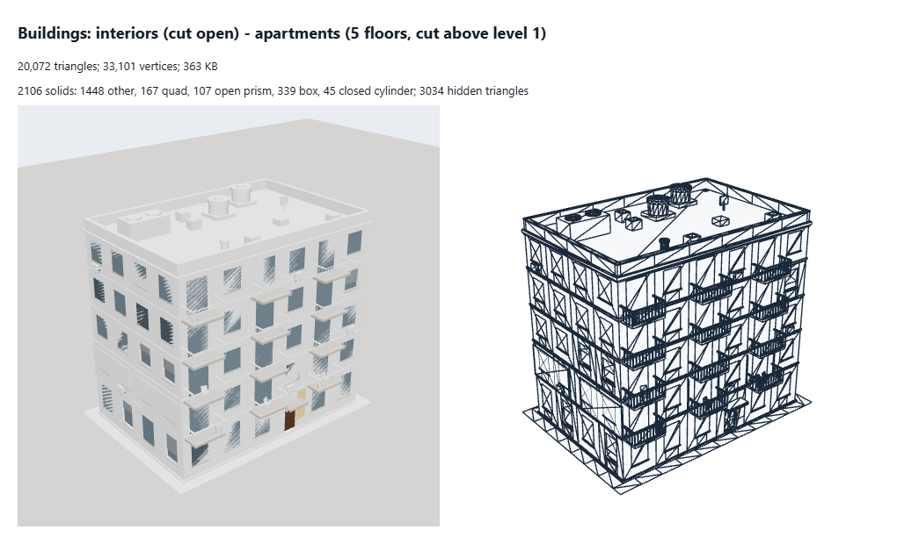
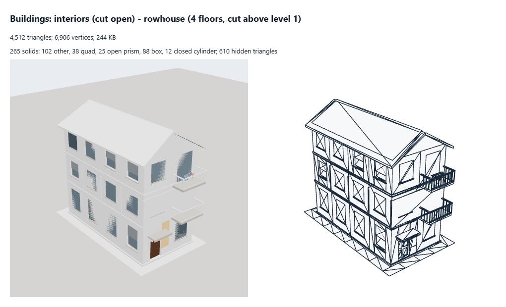
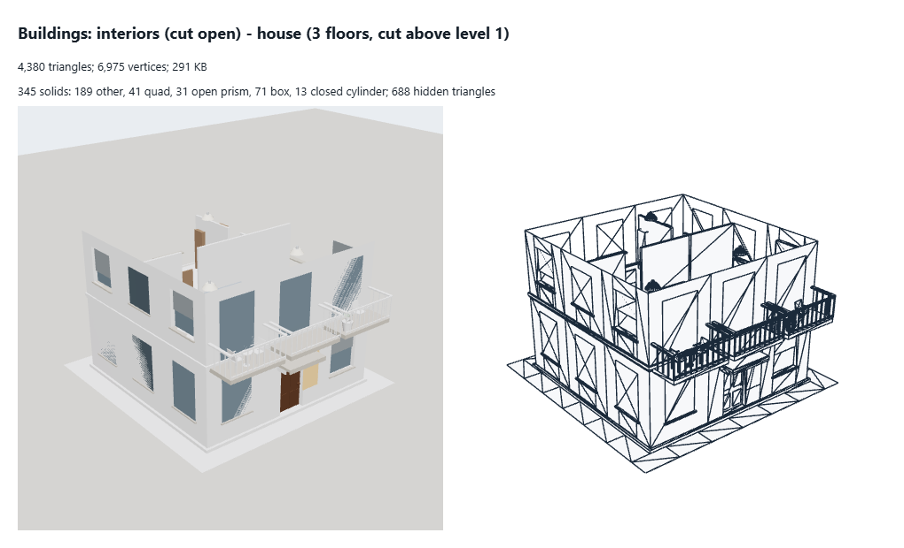

apartments 5 floors, cut above level 1
What to change- Budget: about 2,000 triangles (20,072 today, 10.0 times the budget): walls and floors as boxes, furniture at its budget.
- Remove its 3,034 hidden triangles: faces inside another part or pressed face to face, never seen.
- 152 round part(s) (cylinders, prisms): thin ones as boxes without caps or 3-sided prisms and the fake rounded-corner shader; caps that touch another part left out.
- No level of detail: add ~50% levels (meshoptimizer simplify, weld first) and an impostor or nothing past a few pixels.
- 128 bytes a vertex: quantize (position 3 x int16, normal as 2 x int8 octahedral, colour 4 x uint8): about 12-16 bytes (KHR_mesh_quantization).
- Triangles
- 20,072
- Vertices
- 33,101
- Levels
- L0 20,072
- Memory
- 363 KB (geometry 347 KB, textures 16 KB)
- Per vertex
- 128 B: position:3xFloat32=12B shellOctNormal:2xInt16=4B shellPaint:4xUint16=8B normal:3xFloat32=12B uv:2xFloat32=8B instancePoseA:4xFloat32=16B instancePoseB:4xFloat32=16B litSlot/instance:1xFloat32=4B roomA:4xUint16=8B roomB:4xUint16=8B roomC:4xUint16=8B roomD:4xUint16=8B roomE:4xUint16=8B color:3xFloat32=12B aRoundP:3xFloat32=12B aRoundB:4xFloat32=16B aRoundX:3xFloat32=12B aRoundY:3xFloat32=12B
- Drawn as
- merged
- Material
- MeshStandardMaterial "building-shell" [building-shell-v2-weathered-laid-maps-lots-own-walls|part-pose] (vertex colours, roughness 1, metalness 1, opacity 1) | MeshStandardMaterial "building-part-glass" [room-lights-awake-interior-v15-recess|part-pose] (roughness 0.06, metalness 0, opacity 1) | MeshStandardMaterial "building-part-frame" [thin-part-prefiltered-v3-cards|part-pose] (roughness 0.55, metalness 0.05, opacity 1) | MeshStandardMaterial "building-part-column" [onBeforeCompile() {}|part-pose] (roughness 0.82, metalness 0, opacity 1) | MeshStandardMaterial "building-part-door" [onBeforeCompile() {}|part-pose] (roughness 0.55, metalness 0, opacity 1) | MeshStandardMaterial "building-part-shutter" [onBeforeCompile() {}|part-pose] (roughness 0.5, metalness 0.45, opacity 1) | MeshStandardMaterial "building-part-railing" [thin-part-prefiltered-v3-cards|part-pose] (roughness 0.45, metalness 0.55, opacity 1) | MeshStandardMaterial "building-part-glassDark" [room-lights-awake-interior-v15-recess|part-pose] (roughness 0.08, metalness 0, opacity 1) | MeshStandardMaterial "building-part-lamp" [outside-lamp-lot|part-pose] (roughness 0.35, metalness 0, opacity 1) | MeshBasicMaterial "building-part-wash" [outside-wash-lot|part-pose] (transparent, opacity 0) | MeshStandardMaterial "building-part-acUnit" [facade-ac-front|part-pose] (vertex colours, roughness 0.55, metalness 0.15, opacity 1) | MeshStandardMaterial "building-part-pot" [onBeforeCompile() {}|part-pose] (vertex colours, roughness 0.85, metalness 0, opacity 1) | MeshStandardMaterial "building-part-foliage" [onBeforeCompile() {}|part-pose] (vertex colours, double-sided, roughness 0.75, metalness 0, opacity 1) | MeshStandardMaterial "building-part-bush" [onBeforeCompile() {}|part-pose] (vertex colours, double-sided, roughness 0.8, metalness 0, opacity 1) | MeshStandardMaterial "building-part-chair" [thin-part-prefiltered-v3-cards|part-pose] (vertex colours, roughness 0.6, metalness 0, opacity 1) | MeshStandardMaterial "building-furniture" [building-furniture-rounded|part-pose] (vertex colours, roughness 0.68, metalness 0.04, opacity 1)
- Shader
- patched built-in building-shell-v2-weathered-laid-maps-lots-own-walls|part-pose | patched built-in room-lights-awake-interior-v15-recess|part-pose | patched built-in thin-part-prefiltered-v3-cards|part-pose | patched built-in onBeforeCompile() {}|part-pose | patched built-in outside-lamp-lot|part-pose | patched built-in outside-wash-lot|part-pose | patched built-in facade-ac-front|part-pose | patched built-in building-furniture-rounded|part-pose
- Solids
- 2106 solids: 1448 other, 167 quad, 107 open prism, 339 box, 45 closed cylinder
- Hidden triangles
- 3,034
- Shadow
- -
- Textures
- map DataTexture 64x64 RGBA 8-bit, 1 levels, 16384 B
- Source
src/render/buildings/buildingMesh.ts (cutaway) (editor preview)- Notes
- the Construction tool's cut-open view: walls, floors and furniture of the cut level
3D file (GLB)

rowhouse 4 floors, cut above level 1
What to change- Budget: about 2,000 triangles (4,512 today, 2.3 times the budget): walls and floors as boxes, furniture at its budget.
- Remove its 610 hidden triangles: faces inside another part or pressed face to face, never seen.
- 37 round part(s) (cylinders, prisms): thin ones as boxes without caps or 3-sided prisms and the fake rounded-corner shader; caps that touch another part left out.
- No level of detail: add ~50% levels (meshoptimizer simplify, weld first) and an impostor or nothing past a few pixels.
- 128 bytes a vertex: quantize (position 3 x int16, normal as 2 x int8 octahedral, colour 4 x uint8): about 12-16 bytes (KHR_mesh_quantization).
- Triangles
- 4,512
- Vertices
- 6,906
- Levels
- L0 4,512
- Memory
- 244 KB (geometry 228 KB, textures 16 KB)
- Per vertex
- 128 B: position:3xFloat32=12B shellOctNormal:2xInt16=4B shellPaint:4xUint16=8B normal:3xFloat32=12B uv:2xFloat32=8B instancePoseA:4xFloat32=16B instancePoseB:4xFloat32=16B litSlot/instance:1xFloat32=4B roomA:4xUint16=8B roomB:4xUint16=8B roomC:4xUint16=8B roomD:4xUint16=8B roomE:4xUint16=8B color:3xFloat32=12B aRoundP:3xFloat32=12B aRoundB:4xFloat32=16B aRoundX:3xFloat32=12B aRoundY:3xFloat32=12B
- Drawn as
- merged
- Material
- MeshStandardMaterial "building-shell" [building-shell-v2-weathered-laid-maps-lots-own-walls|part-pose] (vertex colours, roughness 1, metalness 1, opacity 1) | MeshStandardMaterial "building-part-glass" [room-lights-awake-interior-v15-recess|part-pose] (roughness 0.06, metalness 0, opacity 1) | MeshStandardMaterial "building-part-frame" [thin-part-prefiltered-v3-cards|part-pose] (roughness 0.55, metalness 0.05, opacity 1) | MeshStandardMaterial "building-part-column" [onBeforeCompile() {}|part-pose] (roughness 0.82, metalness 0, opacity 1) | MeshStandardMaterial "building-part-door" [onBeforeCompile() {}|part-pose] (roughness 0.55, metalness 0, opacity 1) | MeshStandardMaterial "building-part-shutter" [onBeforeCompile() {}|part-pose] (roughness 0.5, metalness 0.45, opacity 1) | MeshStandardMaterial "building-part-railing" [thin-part-prefiltered-v3-cards|part-pose] (roughness 0.45, metalness 0.55, opacity 1) | MeshStandardMaterial "building-part-glassDark" [room-lights-awake-interior-v15-recess|part-pose] (roughness 0.08, metalness 0, opacity 1) | MeshStandardMaterial "building-part-lamp" [outside-lamp-lot|part-pose] (roughness 0.35, metalness 0, opacity 1) | MeshBasicMaterial "building-part-wash" [outside-wash-lot|part-pose] (transparent, opacity 0) | MeshStandardMaterial "building-part-airer" [thin-part-prefiltered-v3-cards|part-pose] (vertex colours, roughness 0.8, metalness 0, opacity 1) | MeshStandardMaterial "building-furniture" [building-furniture-rounded|part-pose] (vertex colours, roughness 0.68, metalness 0.04, opacity 1)
- Shader
- patched built-in building-shell-v2-weathered-laid-maps-lots-own-walls|part-pose | patched built-in room-lights-awake-interior-v15-recess|part-pose | patched built-in thin-part-prefiltered-v3-cards|part-pose | patched built-in onBeforeCompile() {}|part-pose | patched built-in outside-lamp-lot|part-pose | patched built-in outside-wash-lot|part-pose | patched built-in building-furniture-rounded|part-pose
- Solids
- 265 solids: 102 other, 38 quad, 25 open prism, 88 box, 12 closed cylinder
- Hidden triangles
- 610
- Shadow
- -
- Textures
- map DataTexture 64x64 RGBA 8-bit, 1 levels, 16384 B
- Source
src/render/buildings/buildingMesh.ts (cutaway) (editor preview)- Notes
- the Construction tool's cut-open view: walls, floors and furniture of the cut level
3D file (GLB)

house 3 floors, cut above level 1
What to change- Budget: about 2,000 triangles (4,380 today, 2.2 times the budget): walls and floors as boxes, furniture at its budget.
- Remove its 688 hidden triangles: faces inside another part or pressed face to face, never seen.
- 44 round part(s) (cylinders, prisms): thin ones as boxes without caps or 3-sided prisms and the fake rounded-corner shader; caps that touch another part left out.
- No level of detail: add ~50% levels (meshoptimizer simplify, weld first) and an impostor or nothing past a few pixels.
- 128 bytes a vertex: quantize (position 3 x int16, normal as 2 x int8 octahedral, colour 4 x uint8): about 12-16 bytes (KHR_mesh_quantization).
- Triangles
- 4,380
- Vertices
- 6,975
- Levels
- L0 4,380
- Memory
- 291 KB (geometry 275 KB, textures 16 KB)
- Per vertex
- 128 B: position:3xFloat32=12B shellOctNormal:2xInt16=4B shellPaint:4xUint16=8B normal:3xFloat32=12B uv:2xFloat32=8B instancePoseA:4xFloat32=16B instancePoseB:4xFloat32=16B litSlot/instance:1xFloat32=4B roomA:4xUint16=8B roomB:4xUint16=8B roomC:4xUint16=8B roomD:4xUint16=8B roomE:4xUint16=8B color:3xFloat32=12B aRoundP:3xFloat32=12B aRoundB:4xFloat32=16B aRoundX:3xFloat32=12B aRoundY:3xFloat32=12B
- Drawn as
- merged
- Material
- MeshStandardMaterial "building-shell" [building-shell-v2-weathered-laid-maps-lots-own-walls|part-pose] (vertex colours, roughness 1, metalness 1, opacity 1) | MeshStandardMaterial "building-part-glass" [room-lights-awake-interior-v15-recess|part-pose] (roughness 0.06, metalness 0, opacity 1) | MeshStandardMaterial "building-part-frame" [thin-part-prefiltered-v3-cards|part-pose] (roughness 0.55, metalness 0.05, opacity 1) | MeshStandardMaterial "building-part-column" [onBeforeCompile() {}|part-pose] (roughness 0.82, metalness 0, opacity 1) | MeshStandardMaterial "building-part-door" [onBeforeCompile() {}|part-pose] (roughness 0.55, metalness 0, opacity 1) | MeshStandardMaterial "building-part-shutter" [onBeforeCompile() {}|part-pose] (roughness 0.5, metalness 0.45, opacity 1) | MeshStandardMaterial "building-part-railing" [thin-part-prefiltered-v3-cards|part-pose] (roughness 0.45, metalness 0.55, opacity 1) | MeshStandardMaterial "building-part-glassDark" [room-lights-awake-interior-v15-recess|part-pose] (roughness 0.08, metalness 0, opacity 1) | MeshStandardMaterial "building-part-lamp" [outside-lamp-lot|part-pose] (roughness 0.35, metalness 0, opacity 1) | MeshBasicMaterial "building-part-wash" [outside-wash-lot|part-pose] (transparent, opacity 0) | MeshStandardMaterial "building-part-pot" [onBeforeCompile() {}|part-pose] (vertex colours, roughness 0.85, metalness 0, opacity 1) | MeshStandardMaterial "building-part-foliage" [onBeforeCompile() {}|part-pose] (vertex colours, double-sided, roughness 0.75, metalness 0, opacity 1) | MeshStandardMaterial "building-part-chair" [thin-part-prefiltered-v3-cards|part-pose] (vertex colours, roughness 0.6, metalness 0, opacity 1) | MeshStandardMaterial "building-part-table" [thin-part-prefiltered-v3-cards|part-pose] (vertex colours, roughness 0.55, metalness 0.1, opacity 1) | MeshStandardMaterial "building-furniture" [building-furniture-rounded|part-pose] (vertex colours, roughness 0.68, metalness 0.04, opacity 1)
- Shader
- patched built-in building-shell-v2-weathered-laid-maps-lots-own-walls|part-pose | patched built-in room-lights-awake-interior-v15-recess|part-pose | patched built-in thin-part-prefiltered-v3-cards|part-pose | patched built-in onBeforeCompile() {}|part-pose | patched built-in outside-lamp-lot|part-pose | patched built-in outside-wash-lot|part-pose | patched built-in building-furniture-rounded|part-pose
- Solids
- 345 solids: 189 other, 41 quad, 31 open prism, 71 box, 13 closed cylinder
- Hidden triangles
- 688
- Shadow
- -
- Textures
- map DataTexture 64x64 RGBA 8-bit, 1 levels, 16384 B
- Source
src/render/buildings/buildingMesh.ts (cutaway) (editor preview)- Notes
- the Construction tool's cut-open view: walls, floors and furniture of the cut level
3D file (GLB)